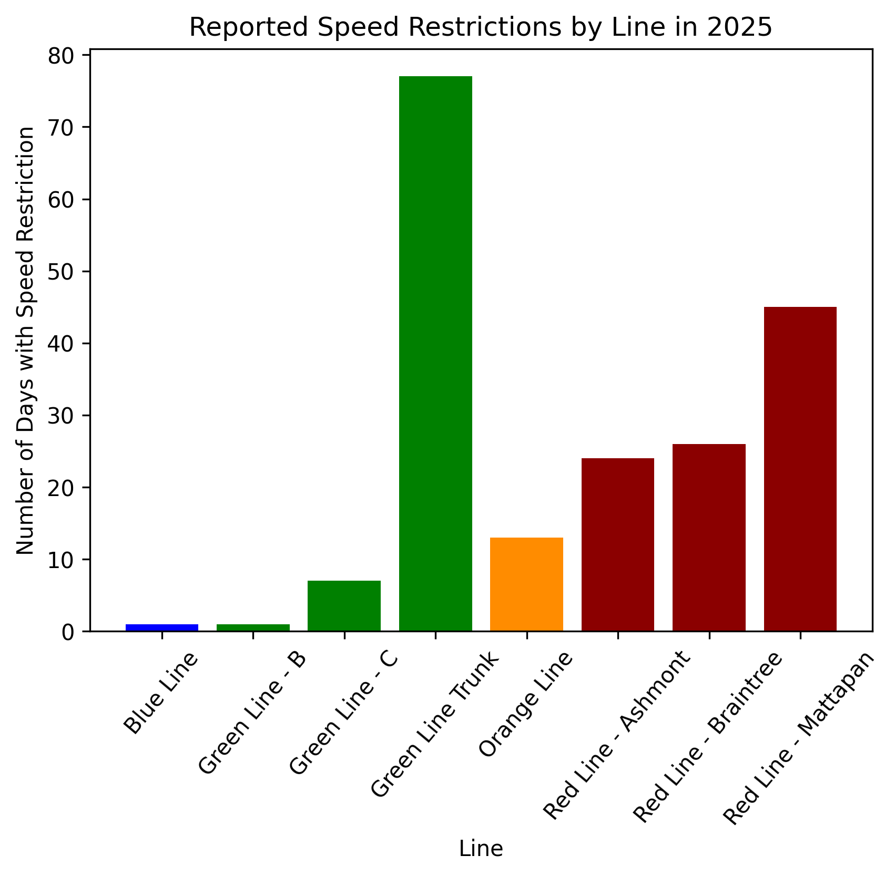

Project Introduction
As students, we are keenly interested in exploring the ongoing service challenges facing the Massachusetts Bay Transportation Authority (MBTA), which serves as a vital link in Boston's public transportation system. The MBTA plays a crucial role, serving thousands of commuters each day. However, persistent issues such as delays, slow zones, and inconsistent ridership patterns have led to frustration and decreased satisfaction among passengers. Understanding the root causes of these problems is essential for improving the system's reliability and efficiency. In this project, we aim to analyze data on ridership trends, transit disruptions, speed restrictions, and the frequency of active speed restriction days to uncover patterns that contribute to service interruptions. Through graphical visualizations, we hope to answer the question: How is the MBTA so slow? By identifying key areas of the system that require attention—whether related to infrastructure, scheduling, or operational factors—we aim to provide valuable insights. Our findings will help policymakers, transit planners, and riders, supporting efforts to improve the MBTA’s reliability and overall effectiveness for the benefit of Boston's commuting community.
References
Data Overview
Describe the dataset, including size, source, and attributes.
Data Visualizations
Visualization 1 (Altair)
Explanation of the visualization.
Visualization 2
EThis boxplot visualizes the speed restrictions (measured in miles per hour) across the MBTA’s various lines from 2023 to 2025. The purpose of this graph is to illustrate the range and distribution of these restrictions for each line, offering insights into how speed limitations impact different segments of the transit system. From the visualization, it is evident that while most of the speed restriction data falls within a consolidated range for each line, and although there are notable outliers; particularly on the Red, Orange, and Blue lines; where certain restrictions deviate significantly from the norm. These outliers can indicate instances where a specific track section experiences much more severe speed limitations compared to the overall trend for that line. The Green Line exhibits the lowest median speed restriction, making it the slowest among the MBTA lines. This aligns with its status as a light rail system, which often operates at reduced speeds due to factors such as track design, at-grade crossings, and vehicle capabilities. In contrast, the Orange Line tends to have higher speed restrictions, suggesting that it generally operates at faster speeds than the other lines. This could be due to factors such as newer track infrastructure or fewer bottlenecks that necessitate slower operation. The Red and Blue Lines appear relatively similar in terms of their speed restriction distributions, with only a slight variation in their median values. This suggests that riders on both lines experience comparable levels of speed regulation, albeit with occasional deviations due to outliers. Overall, this boxplot provides a clear comparative view of how speed restrictions vary across MBTA lines, highlighting both consistent trends and anomalies in their operational constraints.
Visualization 3 (Altair)
This line plot displays ridership trends for each transit line and buses from August 2018 to December 2024. Click on a legend label to highlight a specific line.
Visualization 4
This bar plot shows the number of days with active speed restrictions for each MBTA line in 2025. The Green Line Trunk (shared stops from Copley and beyond) has the most speed restrictions among all MBTA lines, followed by the Red Line.
Visualization 5 (D3)
This scatter plot visualizes the relationship between MBTA speed restrictions (MPH) and the average duration (in days) that these restrictions have been in place, with each data point color-coded by line (Orange, Blue, Red, or Green). The graph reveals that each MBTA line follows a relatively constant trajectory in its restriction patterns, while also highlighting a broader trend over time. Early 2023 had lower speed restrictions compared to 2024, which saw an overall increase in both severity and duration, likely due to expanded track repair programs and safety audits following infrastructure concerns. In contrast, 2025 experienced significantly fewer and shorter-lived restrictions, suggesting that major capital improvement projects; such as rail replacements and station upgrades, had been completed, allowing for more normal train operations. This overall trend reflects the MBTA’s evolving approach to balancing safety measures with transit efficiency, adapting policies as infrastructure improvements progress.
Findings & Summary
Our analysis revealed that the Green Line experiences the most speed restrictions and operates at the slowest pace compared to other MBTA lines. Additionally, it has the most turbulent ridership patterns, likely due to these persistent delays and operational challenges. Notably, these speed restrictions are active on average for longer periods than on any other line, exacerbating delays and inefficiencies. This was our primary takeaway from the visualizations we created, but a more comprehensive analysis could uncover deeper insights, such as identifying specific causes for these restrictions or patterns in ridership behavior. These findings could assist the MBTA in pinpointing critical areas for improvement—ranging from addressing speed restrictions to optimizing service reliability. Ultimately, implementing these changes could enhance the overall rider experience and boost public transit usage in Boston.